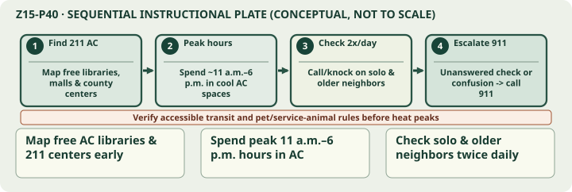

Z15-P40 · Disaster scenarios · New manuscript
Locate public cooling centers early and run twice-daily neighbor heat checks
Keep lower-income, elderly, medically fragile, and un-air-conditioned households connected to free air-conditioned refuge during heat waves.
When it applies · Multi-day Excessive Heat Warnings, urban heat domes, and summer power blackouts.
Equipment · County 211 / municipal cooling-center map, transit/ride plan, charged phone, and neighbor check-in roster.

Actions
- Identify nearby public cooling centers (public libraries, community centers, senior centers, malls, county emergency cooling sites via 211 or local broadcast radio) BEFORE peak afternoon temperatures hit, checking accessible transit and pet/service-animal rules in advance.[D09, D17, U17]
- Plan spending the hottest peak hours (roughly 11 a.m. to 6 p.m.) inside air-conditioned spaces whenever home cooling fails—just several continuous hours in cool AC dramatically lowers cumulative cardiovascular and kidney strain.[D09]
- Check in by phone or brief daytime door knock at least TWICE DAILY on older neighbors, people living alone, and households without AC—summoning 911 promptly if someone fails to answer or appears flushed, confused, or dizzy.[D09, U14, T09]
Failure recognition · Staying isolated inside a top-floor un-air-conditioned bedroom through day four of an Excessive Heat Warning without telling family or visiting a free library cooling center.[D09, U14]
Verify · Confirm local cooling-center hours/transit verified via 211/radio and twice-daily neighbor/relative check-ins active during heat waves.[D09, U14]
Stop or change course · Confusion, slurred speech, collapse, or unanswered welfare check during extreme heat triggers immediate 911 activation.[D09, T09]
Evidence and editorial notes
- D09 · FEMA / Ready.gov · Extreme Heat (current web edition)
- Section: Extreme Heat Waves, Heat Domes, and Power-Outage Cooling Plans · Conditions: Prolonged heat advisories, excessive heat warnings, and grid-strain brownouts
Support: Identify public cooling centers and air-conditioned backup locations ahead of heat waves, check twice daily on older adults/children/chronically ill neighbors, block solar gain through windows, never leave people or pets in parked vehicles, and activate 911 immediately for heat stroke.
Limitations: Electric fans alone do not prevent heat illness when indoor air temperatures climb into extreme heat ranges (above ~95°F) with high humidity. · Conflicting evidence: None; aligns with CDC-HEAT, E08, E19, and T09.
Editorial note: Anchors urban/rural heat-wave resilience and vulnerable-neighbor checks. · Specialist reviewer: Public health and emergency medicine
Primary source · checked 2026-11-24 - D17 · FEMA / Ready.gov · Prepare Your Pets for Disasters (current web edition)
- Section: Pet, Service-Animal, and Vulnerable-Member Accountability · Conditions: Households with pets, service animals, children, older adults, or access/functional needs
Support: Include leashes, carriers, vaccination records, pet food/water, and pet-friendly shelter lists in household evacuation plans—never leave pets chained or trapped behind; coordinate explicit buddy assignments for children, older adults, and mobility/power-dependent household members.
Limitations: General public Red Cross shelters always admit service animals under ADA rules, whereas companion pets often require separate co-located or pet-friendly shelters. · Conflicting evidence: None; complements T10 disability planning.
Editorial note: Ensures complete household and vulnerable-group accountability in Z15. · Specialist reviewer: Accessible emergency management and animal welfare
Primary source · checked 2026-11-24 - T09 · CDC NIOSH · Heat-related Illnesses (current web edition)
- Section: Heat stroke > Symptoms and First aid · Conditions: Suspected heat stroke after exertion or heat exposure
Support: Confusion, slurred speech or loss of consciousness can indicate heat stroke. Call 911 and cool the person promptly.
Limitations: Exertional heat stroke can occur even in moderate ambient temperatures during heavy effort. · Conflicting evidence: None; aligns with T05.
Editorial note: Triggers immediate emergency call and cooling stop condition. · Specialist reviewer: Emergency and wilderness medicine
Primary source · checked 2026-11-24 - U14 · FEMA / Ready.gov · Make a Plan (current web edition)
- Section: Household Emergency Planning, Utility Maps, and Outage Checklists · Conditions: Pre-outage residential documentation and household drills
Support: Document main water, electrical panel, and gas shutoff locations, utility outage phone numbers, medical power registries, and neighborhood check-in networks on paper before storms hit.
Limitations: Utility medical-priority lists do not guarantee uninterrupted power during major ice storms or grid blackouts. · Conflicting evidence: None; bridges Z01 planning with Z13 household infrastructure.
Editorial note: Grounds household utility mapping and vulnerable-occupant contingencies. · Specialist reviewer: Emergency management and accessibility specialist
Primary source · checked 2026-11-24 - U17 · FEMA / Ready.gov · Evacuation (current web edition)
- Section: Household Evacuation Thresholds When Utilities Fail · Conditions: Uninhabitable indoor temperatures, sewage backup, persistent CO alarm, or structural/utility hazard
Support: Establish clear pre-agreed exit triggers to relocate to a warming center, hotel, or relatives BEFORE indoor freezing, carbon monoxide alarms, medical-device battery exhaustion, or impassable blizzard roads trap occupants.
Limitations: Waiting until indoor pipes burst or batteries hit zero removes safe travel options. · Conflicting evidence: None; aligns with T13 and E14.
Editorial note: Defines objective household abandonment thresholds in Z13. · Specialist reviewer: Emergency management and cold-weather operations
Primary source · checked 2026-11-24
Source lineage · FEMA Extreme Heat and Ready.gov Alerts; new manuscript · Classification · New manuscript.